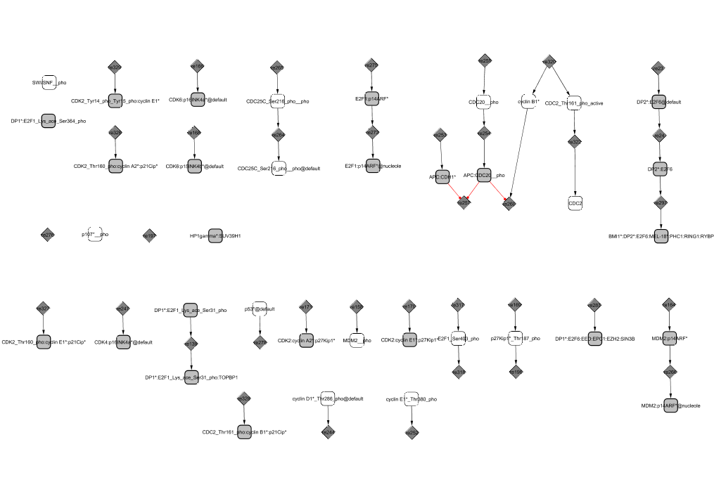

The reaction graph of CellDesigner is represented as a bi-partite reaction graph in Cytoscape. Two types of vertices are used in this graph: reaction vertices and species vertices. An example of a little network :
- All strongly connected components were extracted using the standard Tarjan's algorithm, implemented in BiNoM, and used in further analysis.
- Every strongly connected component was decomposed into relevant cycles , using modification of Vismara's algorithm (Vismara, 1997), implemented in BiNoM. A set of relevant cycles is by definition the union of all minimum cyclic bases . Therefore, it is a minimum unique cyclic graph decomposition (Vismara, 1997).
- For the collection of cycles obtained at the previous step, a simple agglomerative clustering algorithm with asymmetric similarity (proportion of common nodes) was applied: if a subgraph was included in another subgraph in more than p = 50% of its vertices, it was merged with that subgraph. If a subgraph could be merged with several other subgraphs, it was merged with that with which it had the biggest intersection. If the intersection was the same, the subgraph was merged with the biggest subgraph. This process was repeated until there was no possibility to merge subgraphs.
- For every cycle union, "the majority rule" was applied to classify all reactions from non-cyclic part of the network. All incoming and outgoing linear and branching pathways were included to the cluster of cycles to which they were attached. This gave the initial definition of modules.
- Step 4 was repeated with some range of values of p (from 30% to 70%) to ensure that it gives a robust decomposition of the network. The clustering in this range of the parameter always gave the same number of modules.
- All resulting modules were carefully studied and named according to the name of the protein (complex) with major participation. In the process of manual curation, some important reactions and regulations were re-assigned, and some modules were split.
All this procedure was done in Cytoscape environment with use of the structural analysis functions of Cytoscape BiNoM plug-in (**).
Structural decomposition (in)
Structural decomposition (cycling components)
Structural decomposition (out)
 |